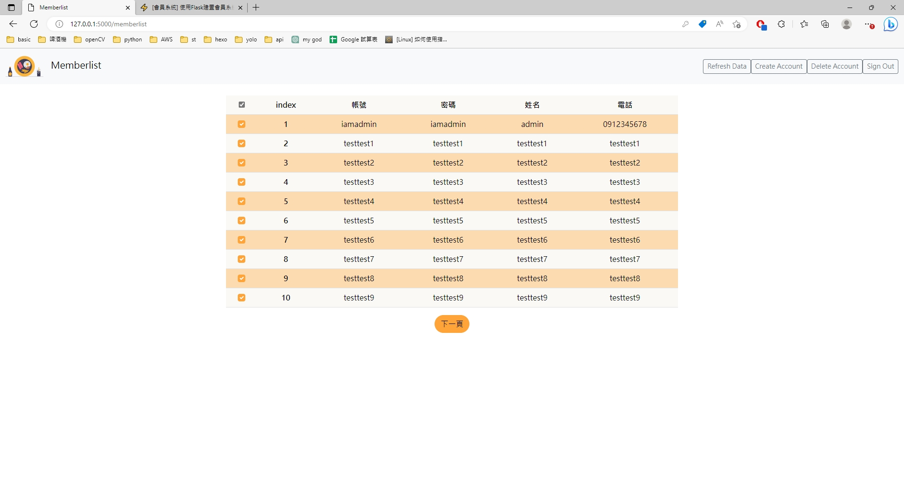

[會員系統] 使用Flask建置會員系統路由，並串接API連接資料庫
這篇文章算是前一篇FAST API的延伸，上次只有串一個很簡略的html前端頁面，而這次比較認真的做了一系列的網頁串接每個API，
主要路由會有 “/index”, “/login”, “/register”, “/memberlist”，分別是首頁、登入、註冊跟會員清單，
其中除了登入及註冊頁面外，都需要用相對應的身分才能進入，像是 “/memberlist”就需要管理員身分才能進入，
否則便會返回登入頁面要求登入。
這次主要會分成兩個區塊，啟動時會需要開flask跟fastapi的server，flask負責整個網頁你看的到的架構，包含裡面包的html,js,css等等，
再透過串接fastapi獲取資料後渲染到前端，這次登入方法是採用session的方式，之後會再使用JWT的方式進行登入的驗證。
至於網頁html,CSS等等這邊不會做講解，這次全部都是使用Bootstrap建置的，有興趣的人可以參考參考。
程式架構
app.py 是啟動網頁的主程式，裡面包含了每個網頁的路由跟資料庫的連接。
templates 裡面則是放了每個路由所需要使用到的html頁面。
membership 是此次專案的虛擬環境可以不用裡他。
剩下的資料夾就都是存放網站資源的地方，像是CSS,js腳本。
註冊
我會依照一般使用者的登入邏輯先run過一次後面再附上程式碼，
“http://127.0.0.1:5000/register“:
這個頁面會串接上一篇文章製作的api將資料寫入到DB，註冊完成後上面會跳出’Register success!’並轉跳至”/login”登入頁面
以下附上串接api的js
$(document).ready(function () {
$('#registerform').submit(function (event) {
// 防止提交默認
event.preventDefault();
// 獲取表單數據
var account = $('#Username').val();
var password = $('#Password').val();
var name = $('#Name').val();
var contactNumber = $('#Phone').val();
// POST Requests with JSON
$.ajax({
url: 'http://127.0.0.1:8000/membership/',
type: 'POST',
contentType: 'application/json',
data: JSON.stringify({
account: account,
password: password,
name: name,
phone: contactNumber
}),
success: function (response) {
console.log(response);
alert('Register success!');
// 跳轉到/signin
window.location.href = "/login";
},
error: function (xhr, status, error) {
if (xhr.status === 400) {
alert('Account already exist');
}
console.error(error);
// 清空欄位
$('#Username').val('');
$('#Password').val('');
$('#Name').val('');
$('#Phone').val('');
}
});
});
});
登入
“http://127.0.0.1:5000/login“:
後台會串連接DB進行驗證，若會員存在就會發出一個session給瀏覽器，瀏覽器便會帶著發出的帳號轉跳至 “http://127.0.0.1:5000/index“
或者管理員身分會轉跳至”http://127.0.0.1:5000/memberlist“
@application.route("/login", methods=["GET", "POST"])
def login():
if request.method == "POST":
account = request.form.get("Username")
password = request.form.get("Password")
if (account == admin["account"] and password == admin["password"]):
response = make_response(redirect(url_for("memberlist")))
session['username'] = admin["account"]
return response
db = client.membership
collection = db.member_data
member = collection.find_one(
{"account": account, "password": password})
if member:
response = make_response(redirect(url_for("index")))
session['username'] = account
return response
else:
# 失敗跳出錯誤訊息
error_msg = ("Invalid account or password")
return render_template("login.html", error_msg=error_msg)
else:
# GET
return render_template("login.html")
並且在”/index”右上會顯示現在的使用者帳號(因為剛剛session中賦予了後端使用者訊息)，按下右上的”Sign Out”會刪除session並導回”/login”。
以下是”Sign Out”後端連接的路由
@application.route("/logout")
def logout():
session.clear() # 清除 session
return redirect(url_for('login'))
清除session後就必須重新登入
會員清單
這邊因為我只設定一組管理員帳號所以就直接將管理員放在flask的檔案中，較好的做法是在DB中建立一個管理員資料庫，
登入頁面只要使用管理員帳號登入，路由會直接導到 “http://127.0.0.1:5000/memberlist“ 而不是 “/index”，

在管理者頁面中右上角的”Refresh Data”背後串接了取的DB的api，每次按一次便會刷新頁面重新取得會員資料，
這邊比較麻煩的是在更新資料時，必須要寫一段javascript來更新畫面，一開始開發顯示會員資料時是一頁到底，後來為了避免資料過於龐大所以便想要最多顯示10筆資料，並且新增換頁的按鍵。
後來靠chatGPT幫忙，並且告著自己做些調整，沒有前端經驗的我也能成功寫出想要的畫面!
“Create Account”則會直接將路由導引至 “http://127.0.0.1:5000/register“ 創建帳號，
“Delete Account”可以直接刪除選取的帳號，背後是直接串接DELETE的api
“Sign Out”跟一般會員頁面一樣，會刪除session。
這邊js稍微比較多，內容是每個按鍵所串接的api
$(document).ready(function () {
$('#registerform').submit(function (event) {
// 防止提交默認
event.preventDefault();
// 獲取表單數據
var account = $('#Username').val();
var password = $('#Password').val();
var name = $('#Name').val();
var contactNumber = $('#Phone').val();
// POST Requests with JSON
$.ajax({
url: 'http://127.0.0.1:8000/membership/',
type: 'POST',
contentType: 'application/json',
data: JSON.stringify({
account: account,
password: password,
name: name,
phone: contactNumber
}),
success: function (response) {
console.log(response);
alert('Register success!');
// 跳轉到/signin
window.location.href = "/login";
},
error: function (xhr, status, error) {
if (xhr.status === 400) {
alert('Account already exist');
}
console.error(error);
// 清空欄位
$('#Username').val('');
$('#Password').val('');
$('#Name').val('');
$('#Phone').val('');
}
});
});
});
驗證問題
這時候就會想到如果使用者直接輸入網址是不是可以繞過登入的步驟進到會員頁面，
所以這邊在”/index”,”/memberlist”都有設置session的驗證，若使用者直接輸入網址且沒有帶上session便會被導回”/login”，且跳出”請先登入”，
若是一般帳號登入後想直接進入”/memberlist”頁面，則會跳出”你並非管理員”，並導回”/index”
@application.route("/index")
def index():
if 'username' not in session:
flash("請先登入")
return redirect(url_for('login'))
return render_template("index.html")
@application.route("/memberlist")
def memberlist():
if 'username' not in session:
flash("請先登入")
return redirect(url_for('login'))
elif session['username'] != admin['account']:
flash("你並非管理員")
return redirect(url_for('index'))
# 查詢所有會員頁面
return render_template("memberlist.html")
最後附上GitHub連結:https://github.com/AnselCh/Flask_MemberSystem